ForgeBox AI
A Kubernetes-native cloud IDE where every user gets a fully isolated, AI-powered sandbox with live preview, in-browser terminal, and real-time file sync. Think StackBlitz — but self-hosted, AI-native, built from scratch.
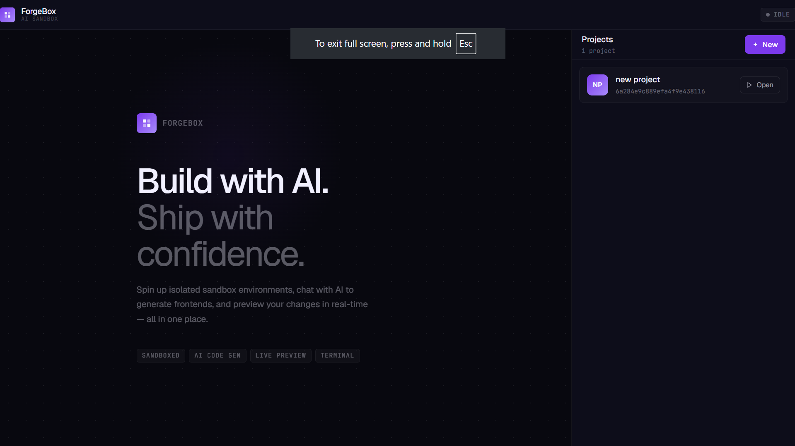
ForgeBox AI — Landing page and project dashboard
The Problem
Traditional cloud IDEs require persistent VMs, complex user storage, high compute costs, and brittle shared-resource models. Most AI coding tools generate code in isolation — disconnected from a live dev server.
ForgeBox AI solves both simultaneously:
- Provisions ephemeral per-user Kubernetes pods — created when a project opens, destroyed after idle timeout
- The AI agent operates inside the sandbox over internal Kubernetes network, writing to the same
/workspacevolume the Vite server watches - Every AI-generated change appears in the browser the moment it is written via Vite HMR
Features
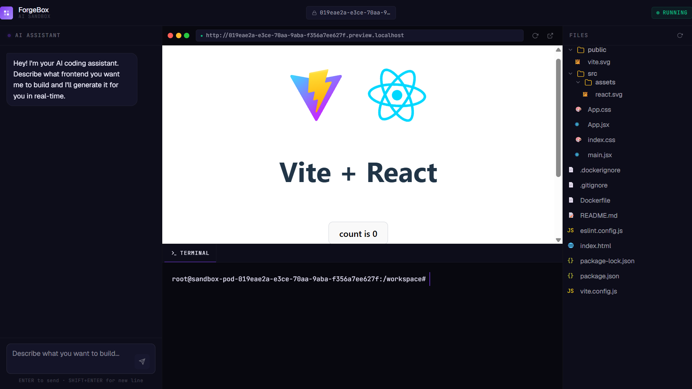
Full IDE layout — AI chat (left) · Live Vite preview (center) · In-browser terminal · File explorer (right)
<id>.preview.localhost URL./workspace listing from agent API. Excludes node_modules, .git, dist.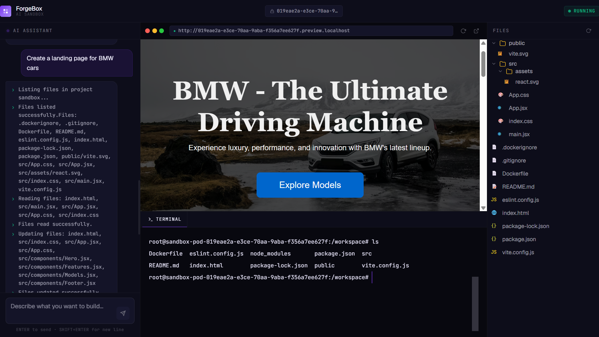
AI agent generating a full React page from a natural language prompt
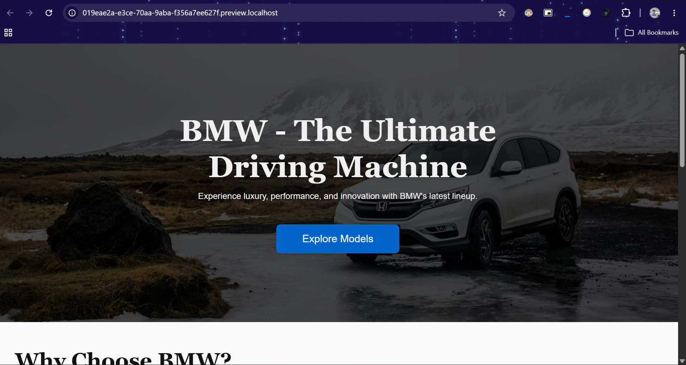
Landing page scaffold generated by AI, reflected instantly via Vite HMR
Architecture
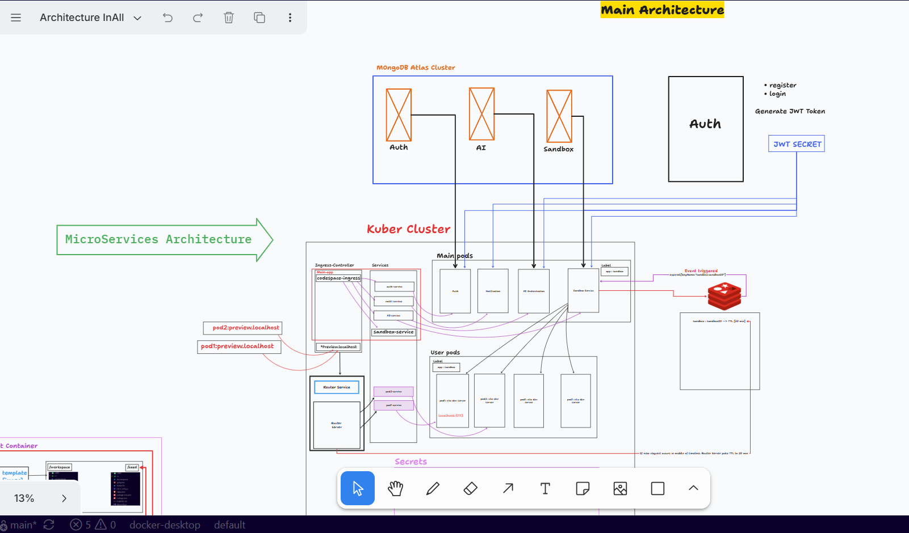
Complete architecture with full data flow between all microservices
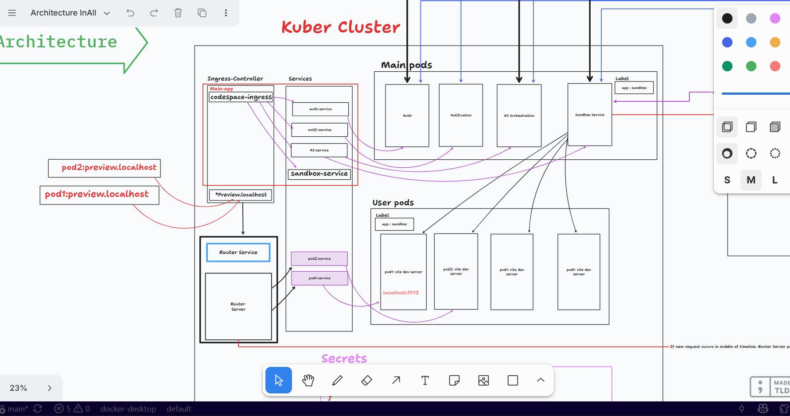
Main system — MongoDB Atlas · Kubernetes Cluster · Ingress · Services · Main Pods · User Pods · Redis
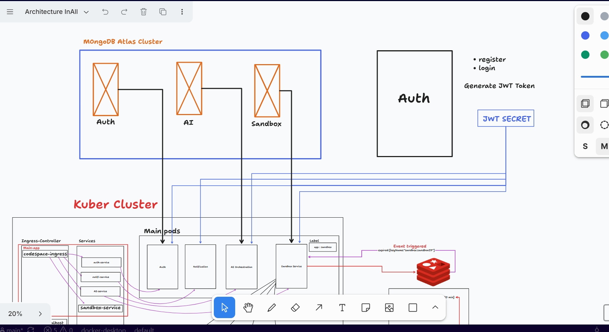
Kubernetes cluster internals — Ingress Controller · Services · Main pods · User pods · Router Service
Main Pods — long-lived platform services
| Service | Responsibility |
|---|---|
| auth-service | Google OAuth 2.0 flow, JWT issuance, user persistence in MongoDB |
| notification-service | RabbitMQ consumer → Nodemailer login confirmation emails via Gmail OAuth2 |
| ai-orchestration | LangChain + Mistral Medium agent, streams tool call activity via SSE |
| sandbox-server | Kubernetes Pod/Service lifecycle manager, project CRUD, Redis TTL key management |
| router-service | Dynamic wildcard reverse proxy — routes *.preview.localhost and *.agent.localhost to correct pods |
Pod Architecture
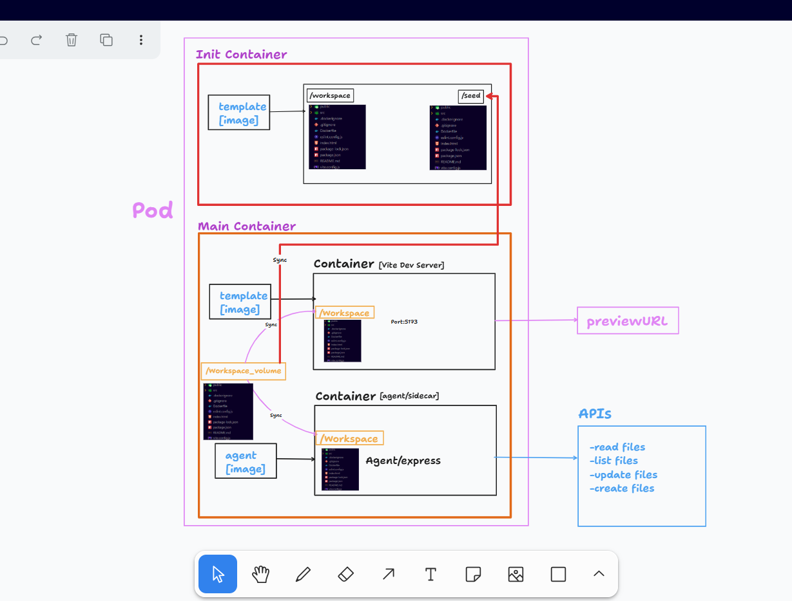
User pod internals — Init container · Vite dev server · Agent/sidecar · Sync agent · shared /workspace volume
User Pods — ephemeral, one per sandbox session
| Container | Role |
|---|---|
| init-container | Copies Vite template scaffold into shared /workspace emptyDir volume before main containers start |
| vite-container | Vite dev server on port 5173. Watches /workspace. HMR fires on every file change. |
| agent-container | Express + Socket.IO sidecar. Serves file REST API + WebSocket terminal via node-pty. |
| sync-agent | chokidar watcher → S3 uploads. On startup, downloads existing files from S3. |
Request Flow
The AI service calls agent containers directly via internal cluster DNS (http://sandbox-service-<id>:3000) — bypassing Ingress entirely for faster file read/write operations.
Sandbox Lifecycle
AI Agent Flow
Tech Stack
| Layer | Technology |
|---|---|
| Orchestration | Kubernetes (EKS target), eksctl, Skaffold |
| Containerization | Docker |
| AI Agent | LangChain, Mistral Medium (Mistral AI API) |
| Backend | Node.js, Express.js |
| Real-time (AI) | Server-Sent Events (SSE) |
| Real-time (Terminal) | Socket.IO WebSockets + node-pty |
| Terminal UI | xterm.js + FitAddon + WebLinksAddon |
| Frontend | React, Vite |
| Database | MongoDB Atlas |
| Cache / Lifecycle | Redis (keyspace notifications) |
| Message Queue | RabbitMQ |
| File Storage | AWS S3 + chokidar |
| Auth | Passport.js, Google OAuth 2.0, JWT (httpOnly cookie) |
| Nodemailer + Gmail OAuth2 | |
| Ingress | NGINX Ingress Controller |
Local Setup
Prerequisites
- Docker Desktop with Kubernetes enabled
kubectlandskaffoldinstalled- MongoDB Atlas, Redis instance, AWS S3 bucket
- Mistral AI API key + Google OAuth 2.0 credentials
Enable Kubernetes
Settings → Kubernetes → Enable Kubernetes → Apply & Restartkubectl get nodes
# NAME STATUS ROLES
# docker-desktop Ready control-planeConfigure Secrets
# Edit k8s/secrets.yml with your values
# MongoDB URI, Redis URL, JWT secret,
# Google OAuth credentials, Mistral API key, AWS credentialsRun
skaffold dev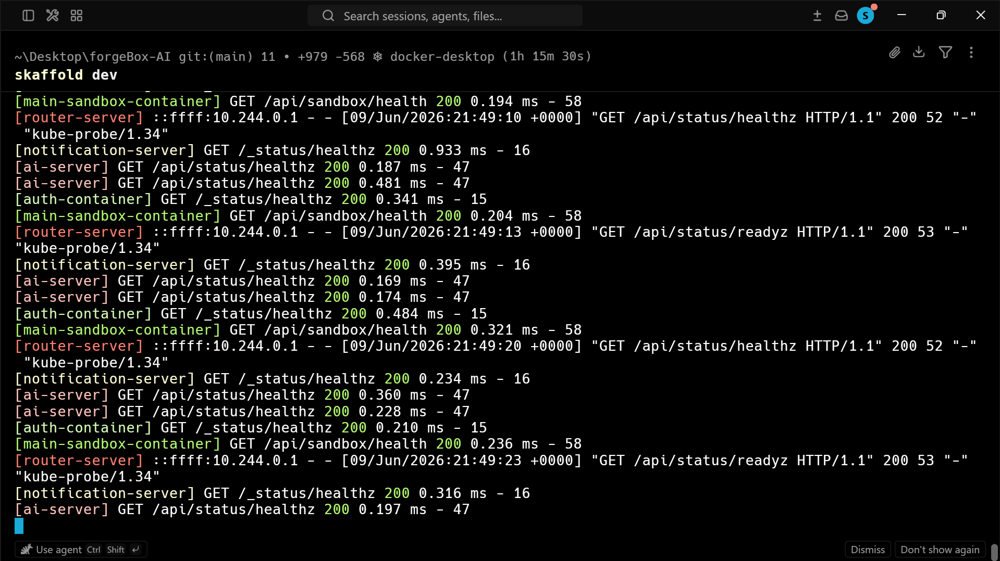
Skaffold building images, applying manifests, watching for changes
Access
http://localhost → Frontend
http://<sandboxId>.preview.localhost → Sandbox live preview
http://<sandboxId>.agent.localhost → Agent / terminal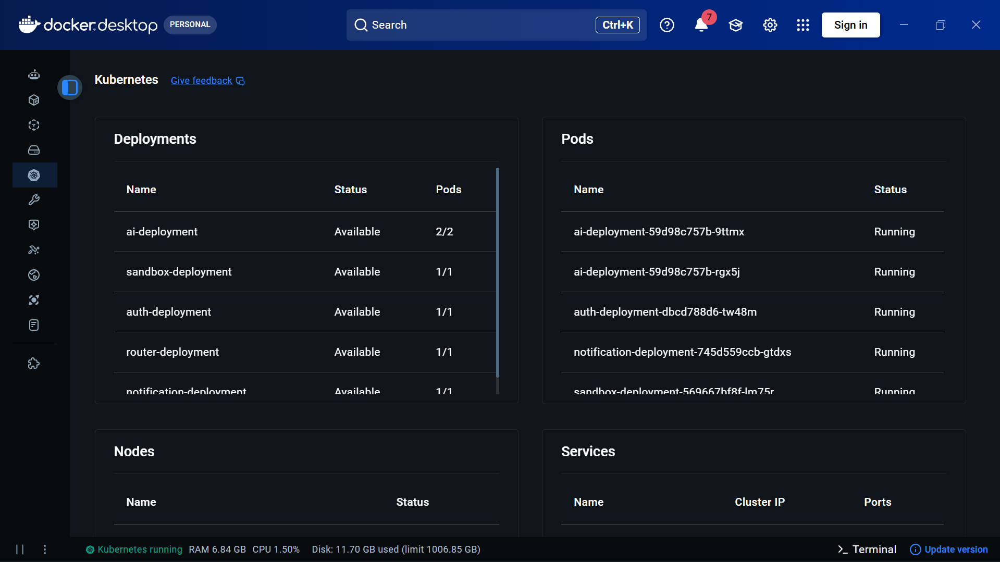
Kubernetes pods running — main service pods + dynamically provisioned user sandbox pods
Kubernetes Manifests
k8s/
├── ai-deployment.yml
├── ai-service.yml
├── auth-deployment.yml
├── auth-service.yml
├── ingress.yml
├── notification-deployment.yml
├── notification-service.yml
├── rbac.yml
├── router-deployment.yml
├── router-service.yml
├── sandbox-deployment.yml
├── sandbox-service.yml
└── secrets.ymlProvision EKS Cluster
eksctl create cluster \
--name forgebox \
--region ap-south-1 \
--nodegroup-name express-nodes \
--node-type t3.medium \
--nodes 2 --nodes-min 1 --nodes-max 3 \
--managedDeploy
kubectl apply -f k8s/
kubectl get pods
kubectl get servicesFile Persistence
The sync-agent container uses chokidar to watch /workspace. Every file write uploads to S3 under a key prefixed by project ID. On pod startup, the sync-agent downloads all existing files — workspaces survive pod destruction completely.
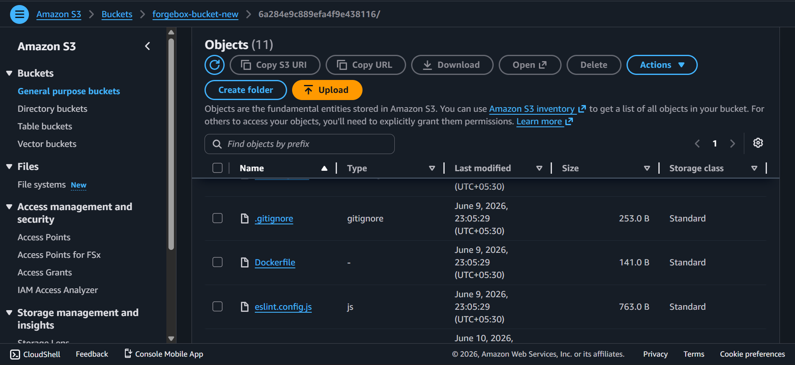
AWS S3 bucket — project workspaces persisted by project ID prefix, restored on every pod start
Deployment Status
All services running on Docker Desktop Kubernetes. Dynamic pod provisioning, wildcard ingress, Redis TTL lifecycle, S3 sync, AI streaming, and in-browser terminal all validated locally.
⚠️ AWS EKS Cloud Deployment — Pending
This project requires real Kubernetes — dynamic pod provisioning, wildcard ingress, and init container workspace seeding cannot run on any PaaS. EKS was the target. A full day of debugging hit three separate blockers:
-
❌
AWS Educate account — platform-level EC2 blockIAM correct. vCPU quota showed 8. CloudFormation deployed fine. Managed nodegroup nodes never launched — zero EC2 instances, silent failure. Educate accounts block EKS managed nodegroups at platform level. Not documented anywhere.
-
❌
New personal account — silent 24-48hr EC2 verification periodSame timeout with 16 vCPU quota confirmed, correct IAM, t3.medium available across all 3 AZs in both ap-south-1 and ap-south-2. New AWS accounts have a silent EC2 verification window before instances can launch.
-
❌
RBI e-mandate + Bank of Baroda international transaction blockAWS bills in USD. RBI mandates explicit OTP e-mandate for recurring international charges. BOB debit card dropped the authorization before the handshake completed. AWS showed a generic payment error with no specific reason.
Kubernetes manifests are production-ready. EKS deployment goes live once account verification completes.
Key Design Decisions
| Decision | Rationale |
|---|---|
| Ephemeral pods per user | Clean environments every session. Eliminates shared-state bugs. Enables spot/preemptible node usage. |
| Init container for workspace | Immutable starting point per session. Template updated independently of runtime containers. |
| Redis TTL for lifecycle | No batch jobs. Delegates to Redis built-in keyspace notifications — reliable and low-latency. |
| SSE for AI streaming | Simpler than WebSockets for unidirectional streaming. Standard HTTP, no upgrade negotiation. |
| Socket.IO for terminal | Full-duplex required for interactive PTY. WebSockets are the only appropriate transport. |
| AI via internal cluster DNS | Bypasses Ingress entirely. Significantly faster file read/write for the agent loop. |
| S3 for file persistence | Decouples user work from compute lifecycle. Pod destroyed and recreated without file loss. |
| RabbitMQ for notifications | Email failures isolated from auth critical path. Durable queue — no silent drops. |
Scalability & Reliability
All main-tier services are stateless (state externalized to Redis, MongoDB, S3) and horizontally scalable by increasing Deployment replica counts.
- Health checks — All Deployments define
livenessProbeandreadinessProbeHTTP endpoints - Resource limits — Pod resource requests and limits defined. No sandbox can exhaust node resources.
- Session affinity — Cookie-based affinity for multi-replica Router deployments.
- Full isolation — No user's sandbox can affect another's. Separate network namespace, volume, and resource allocation per pod.
Ephemeral pods + S3 persistence + Redis TTL + RabbitMQ async notifications produce a system that is resource-efficient, operationally observable, inherently isolated, and capable of serving many concurrent users without interference.